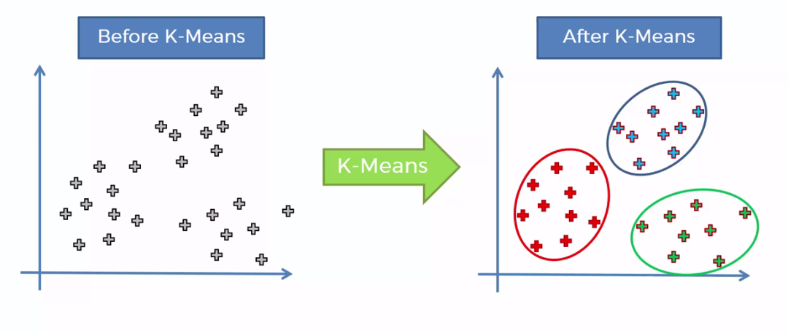

K-Means Clustering
K-means clustering is a type of unsupervised learning, which is used when you have unlabeled data (i.e., data without defined categories or groups). The goal of this algorithm is to find groups in the data, with the number of groups represented by the variable K. The algorithm works iteratively to assign each data point to one of K groups based on the features that are provided. Data points are clustered based on feature similarity. The results of the K-means clustering algorithm are:
- The centroids of the K clusters, which can be used to label new data
- Labels for the training data (each data point is assigned to a single cluster)
Rather than defining groups before looking at the data, clustering allows you to find and analyze the groups that have formed organically. The "Choosing K" section below describes how the number of groups can be determined.
Each centroid of a cluster is a collection of feature values which define the resulting groups. Examining the centroid feature weights can be used to qualitatively interpret what kind of group each cluster represents.

Business Uses:
The K-means clustering algorithm is used to find groups which have not been explicitly labeled in the data. This can be used to confirm business assumptions about what types of groups exist or to identify unknown groups in complex data sets. Once the algorithm has been run and the groups are defined, any new data can be easily assigned to the correct group.
This is a versatile algorithm that can be used for any type of grouping. Some examples of use cases are:
Behavioral segmentation:
- Segment by purchase history.
- Segment by activities on application, website, or platform.
- Define personas based on interests.
- Create profiles based on activity monitoring.
Inventory categorization:
- Group inventory by sales activity.
- Group inventory by manufacturing metrics.
Sorting sensor measurements:
- Detect activity types in motion sensors.
- Group images.
- Separate audio.
- Identify groups in health monitoring.
Detecting bots or anomalies:
- Separate valid activity groups from bots.
- Group valid activity to clean up outlier detection.
In addition, monitoring if a tracked data point switches between groups over time can be used to detect meaningful changes in the data.
Algorithm:
The Κ-means clustering algorithm uses iterative refinement to produce a final result. The algorithm inputs are the number of clusters Κ and the data set. The data set is a collection of features for each data point. The algorithms starts with initial estimates for the Κ centroids, which can either be randomly generated or randomly selected from the data set.
The algorithm then iterates between two steps:
- Data assigment step:
Each centroid defines one of the clusters. In this step, each data point is assigned to its nearest centroid, based on the squared Euclidean distance. More formally, if ci is the collection of centroids in set C, then each data point x is assigned to a cluster based on

where dist( · ) is the standard (L2) Euclidean distance. Let the set of data point assignments for each ith cluster centroid be Si.
- Centroid update step:
In this step, the centroids are recomputed. This is done by taking the mean of all data points assigned to that centroid's cluster.

The algorithm iterates between steps one and two until a stopping criteria is met (i.e., no data points change clusters,the sum of the distances is minimized, or some maximum number of iterations is reached).
This algorithm is guaranteed to converge to a result. The result may be a local optimum (i.e. not necessarily the best possible outcome), meaning that assessing more than one run of the algorithm with randomized starting centroids may give a better outcome.
Choosing K:
The algorithm described above finds the clusters and data set labels for a particular pre-chosen K. To find the number of clusters in the data, the user needs to run the K-means clustering algorithm for a range of K values and compare the results. In general, there is no method for determining exact value of K, but an accurate estimate can be obtained using the following techniques.
One of the metrics that is commonly used to compare results across different values of K is the mean distance between data points and their cluster centroid. Since increasing the number of clusters will always reduce the distance to data points, increasing K will always decrease this metric, to the extreme of reaching zero when K is the same as the number of data points. Thus, this metric cannot be used as the sole target. Instead, mean distance to the centroid as a function of K is plotted and the "elbow point," where the rate of decrease sharply shifts, can be used to roughly determine K.
A number of other techniques exist for validating K, including cross-validation, information criteria, the information theoretic jump method, the silhouette method, and the G-means algorithm. In addition, monitoring the distribution of data points across groups provides insight into how the algorithm is splitting the data for each K.
Feature Engineering:
Feature engineering is the process of using domain knowledge to choose which data metrics to input as features into a machine learning algorithm. Feature engineering plays a key role in K-means clustering; using meaningful features that capture the variability of the data is essential for the algorithm to find all of the naturally-occurring groups.
Categorical data (i.e., category labels such as gender, country, browser type) needs to be encoded or separated in a way that can still work with the algorithm.